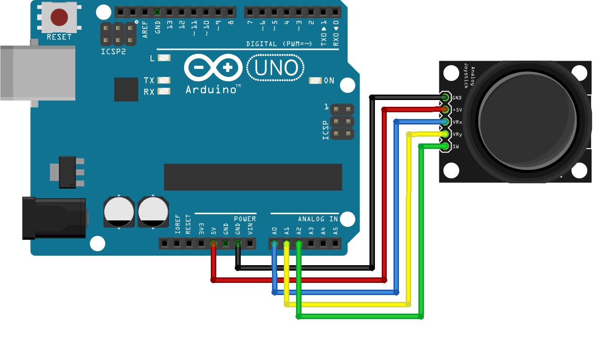
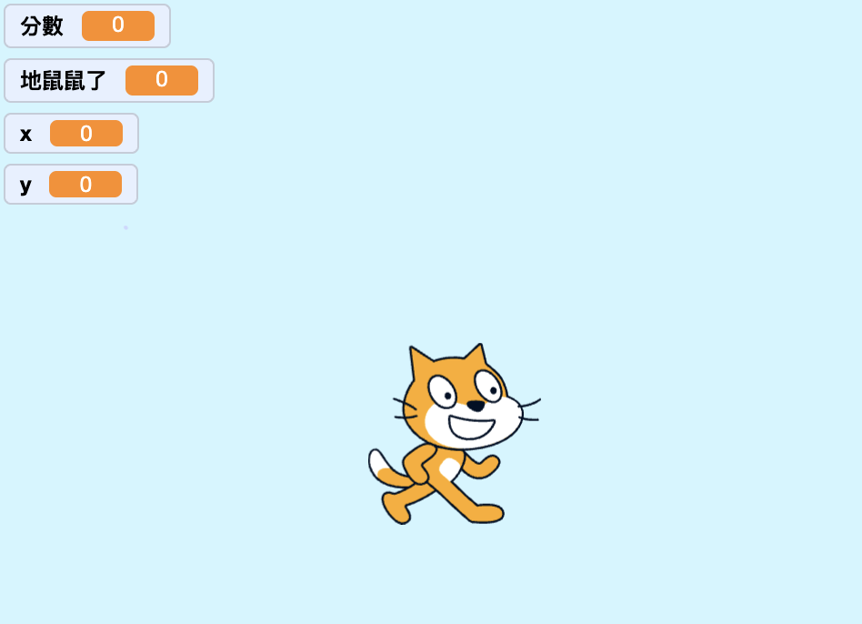
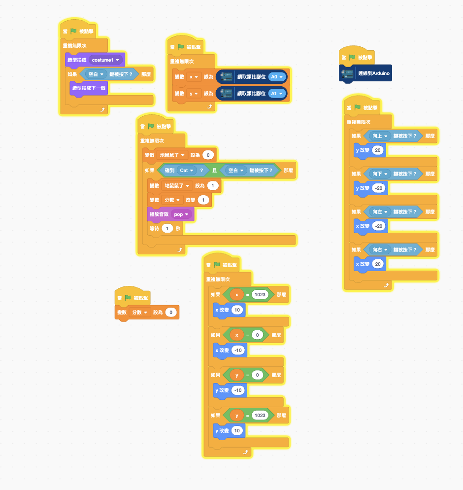
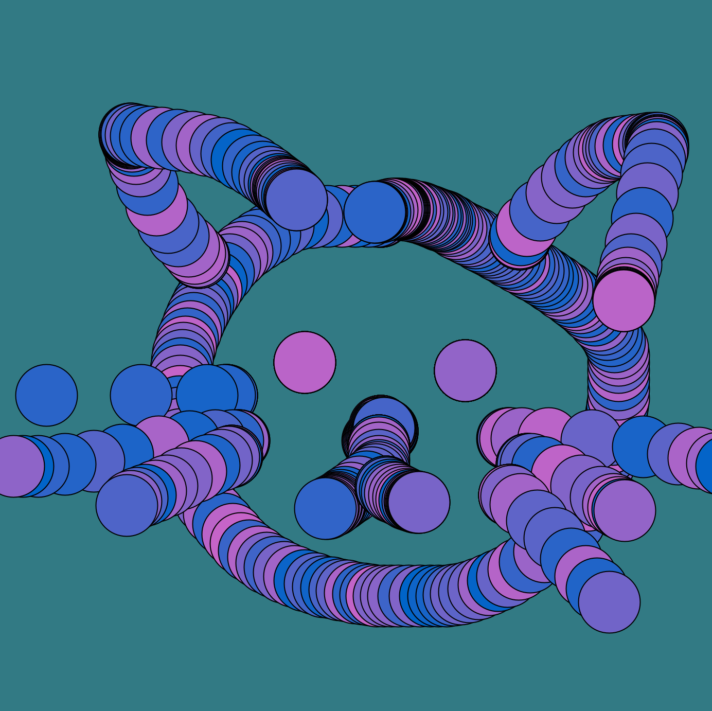
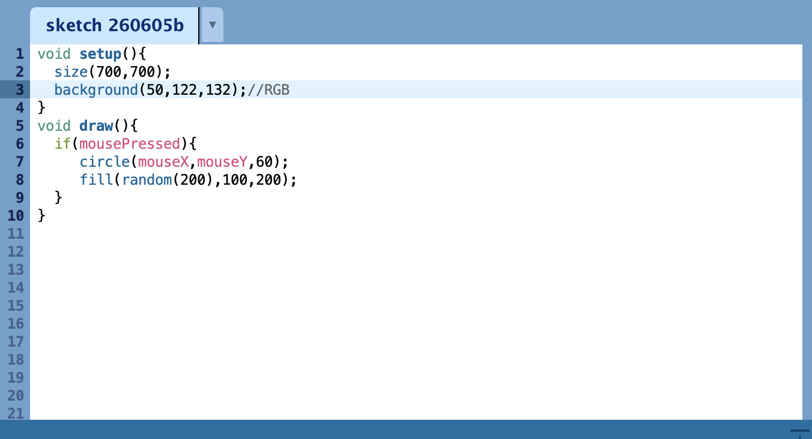
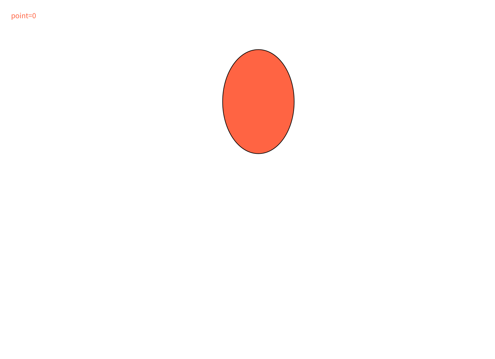
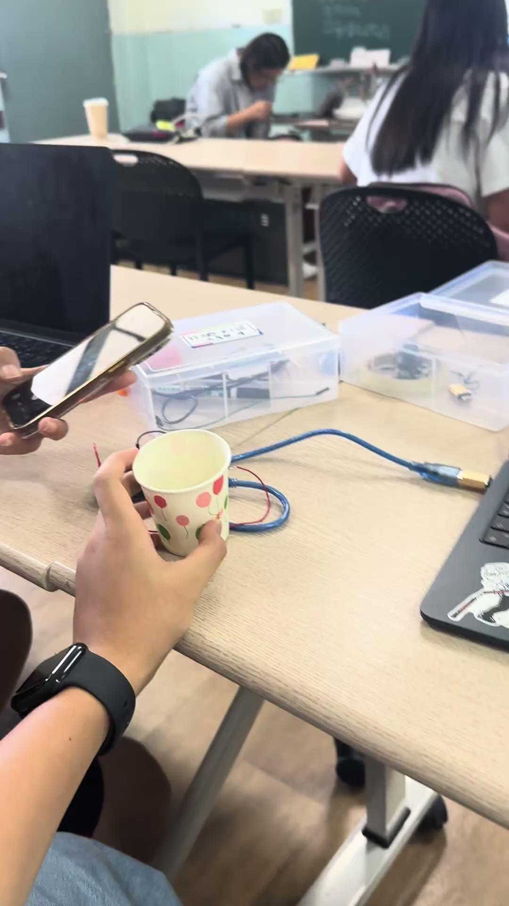

一、Scratch x Joystick

一（1）、Scratch x Joystick - 賽車遊戲


遊戲畫面截圖
程式碼截圖
一（2）、Scratch x Joystick - 打地鼠遊戲



遊戲畫面截圖
程式碼截圖
二、Processing基礎 - 彩色泡泡、射氣球、乒乓球裝置

二（1）、Processing基礎練習 - 彩色泡泡


遊戲畫面截圖
二（2）、Processing基礎練習 - 射氣球

遊戲畫面截圖
import processing.sound.*;
float ballY = 600 ;
float ballX = 400 ;
int point = 0 ;
SoundFile popSound ;
void setup(){
size(800,600) ;
popSound = new SoundFile(this, "button03b.mp3");
}
void draw(){
//================================
background(255) ;
fill(267,100,67) ;
ellipse(ballX,ballY,110,160) ;
ballY = ballY - 3 ;
//================================
if (ballY == 0){
ballY = 650 ;
ballX = random (50,700) ;
}
//================================
text ("point="+point,20,40) ;
}
void mousePressed(){
if(dist(mouseX,mouseY,ballX,ballY) <= 50){
point++ ;
ballY = 650 ;
ballX = random (50,700);
}
}二（3）、Processing基礎練習 - 乒乓球裝置

遊戲影片
import processing.serial.*;
Serial myPort;
PFont font;
boolean arduinoConnected = false;
int score = 0;
String message = "等待投球";
void setup() {
fullScreen();
pixelDensity(1);
font = createFont("PingFang TC", 32);
textFont(font);
textAlign(CENTER, CENTER);
println(Serial.list());
try {
for (String p : Serial.list()) {
if (p.contains("usbserial")) {
myPort = new Serial(this, p, 9600);
myPort.bufferUntil('\n');
arduinoConnected = true;
println("Arduino連線成功：" + p);
break;
}
}
}
catch(Exception e) {
println("Arduino連線失敗");
println(e);
}
}